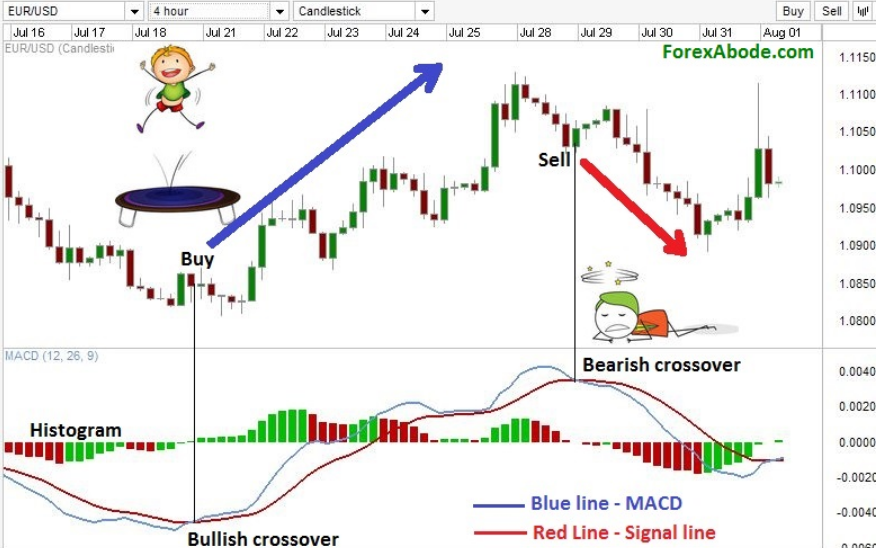
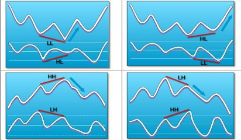
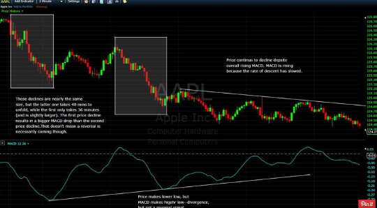

선물시장에는 모든 보조지표를 배제하고 주가의 움직임만 가지고 매매하는
Price action trading 기법으로 매매하는 트레이더들이 많다
그 이유는 물론 여러가지겠지만 대부분의 보조지표라는게 후행성이고 추세장에서는 잘 맞지 않기 때문일것이다
하지만 아직도 MACD나 Stodchastic, CCI, RSI같은 보조지표를 매매에 활용하는 트레이더들도 상당수 있을것이므로
오늘은 그중에 MACD에 대해 한번 알아보기로하자
MACD--moving average convergence divergence
말 그대로 번역하면 정해진 두개의 이동평균선의 수렴과 발산이다
보통 MACD를 매매에 이용하는 방법으로는 MACD의 교차, 중앙선 통과, 다이버전스 등이 있다
이중에서 가장 혼란을 주는것이 바로 다이버전스
MACD의 움직임을 만드는 요인은 속도와 규모(길이)다 (Velocity and Magnitude)
주가가 첫번째 강한 상승(하락)을 했다가 이어서 두번째 상승(하락)할때 첫번째보다 그 진행속도가 느려지면 모멘텀이 줄어들면서 MACD의 길이가 처음보다 짧아져 다이버전스가 발생한다
장중에서 발생하는 수많은 고점 저점의 만들어지는 속도와 길이가 같을 수 없기 때문에 항상 크건 작건 다이버전스가 발생하고 있다

그렇기 때문에 장중에서 무수히 발생하는 MACD 다이버전스는 단순히 지금의 움직임이 조금전 움직임보다 속도나 모멘텀이 줄어들었다 정도로 해석을 해야지 모든 다이버전스에 큰 의미를 부여하면 안된다
또 주가가 한쪽방향으로 느리게 계속 진행하는 추세 장세에서는 MACD를 만들어주는 중요한 요소인 주가 움직임의 크기와 속도가 느려져서 주가는 계속 저점을 갱신하는데 MACD는 고점이 점점 올라오는 이상현상이 발생하기도 한다

MACD의 올바른 사용법
MACD는 현재 힘의 균형상태 즉 모멘텀을 보여주는 지표다
두 이평선이 교차한다는것은 힘의 방향이 바뀐다는 신호로 볼 수 있고
현재 MACD의 진행 방향은 주가의 단기추세라고 볼 수 있다
또 MACD Divergence는 전고점(저점)과 현재의 힘의 강도차이를 보여주는 좋은 지표로
새로운 포지션을 잡는다든지 포지션을 정리할 때 참고할 수 있는 좋은 신호가 된다
단지 주의할 점은 위에 언급한것처럼 장세에 따라 잘못된 신호가 발생할 경우가 많아
신뢰도가 낮은만큼 매매를 결정하는 주된 요소로 사용하면 위험하다
번지점프를 할때 사용하는 로프의 신뢰도에 문제가 있다면 믿고 뛰어내릴 수 없듯이
모든 보조지표는 단지 매매에 참고로 사용하는 수준에 머물러 있어야 한다
프로 트레이더들이 모이는 https://futures.io/ 에서 다른 많은 트레이더들하고 대화를 해보면
대부분의 선물매매 고수들이 저런식으로 잘못된 신호가 자주 발생하는 보조지표들을 배제하고
실전매매에 있어 믿을만한 중요한 이평선이나 VWAP 하나 딱 그어놓고
주가가 그 밑에서 놀면 하락장세로 보고 그 위에서 놀면 상승장세로 보면서
이평선의 기울기가 없으면 횡보니까 일단 매매중지고
이평선이 기울기 각도가 있을때 그 각도 방향쪽으로 매매를 하는 Price action trading을 선호하고들 있다
장중에서 추세와 분위기는 매순간 바뀌기 때문에 매매중에는 확실하게 믿을만한게 아무것도 없다
그야말로 칼바람부는 벌판에 홀로 서 있다
이런 상황에서 믿을거라곤 오직 그날의 추세밖에 없다
상승중인지 하락중인지 아니면 횡보중인지
"추세는 모든것을 우선한다"
"Trend is our friend !!"
항상 잊지말아야 할 매매의 가장 중요한 시작점이다